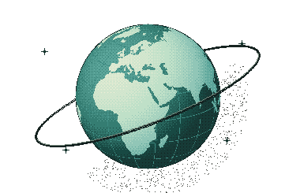

Orbit Office — Portfolio.exe
Orbit Office — Portfolio.exe ORBIT OFFICE®
Orbit
Office.
独立平面设计工作室
从一张海报，到一套视觉识别。我们用网格、字体和专色，把想法印在纸上。
orbit.bmp

C:\Studio\Design3 files · v1.0.0
Orbit Office — Portfolio.exe独立平面设计工作室
从一张海报，到一套视觉识别。我们用网格、字体和专色，把想法印在纸上。

 电子音乐
电子音乐 植物标本
植物标本 旅行邮票
旅行邮票